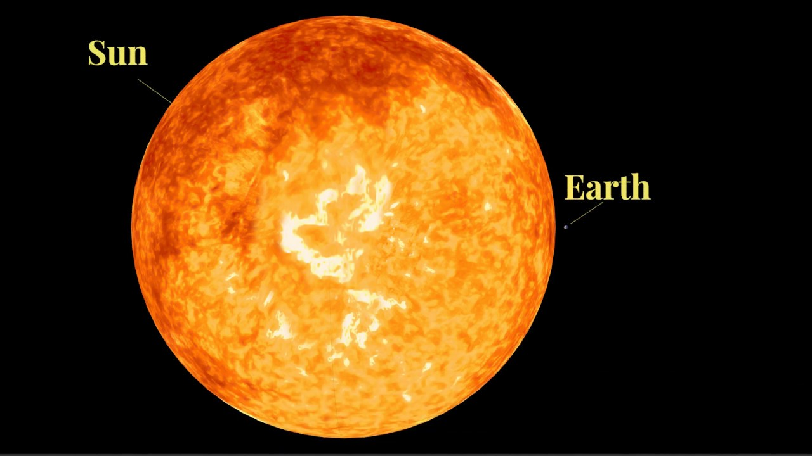
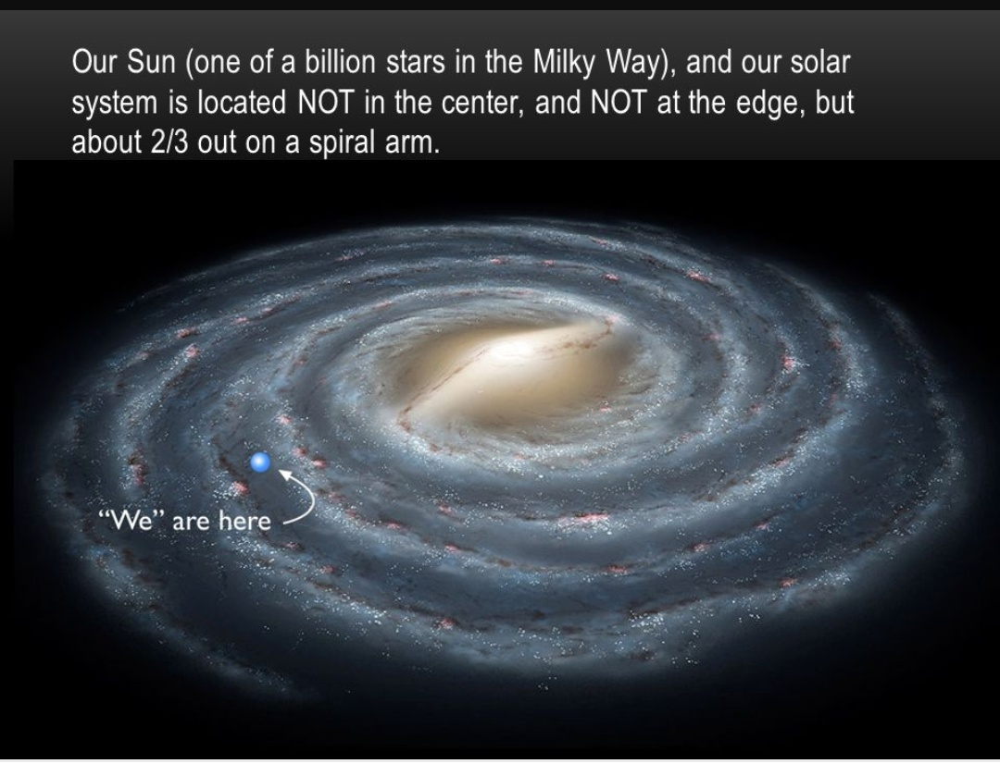
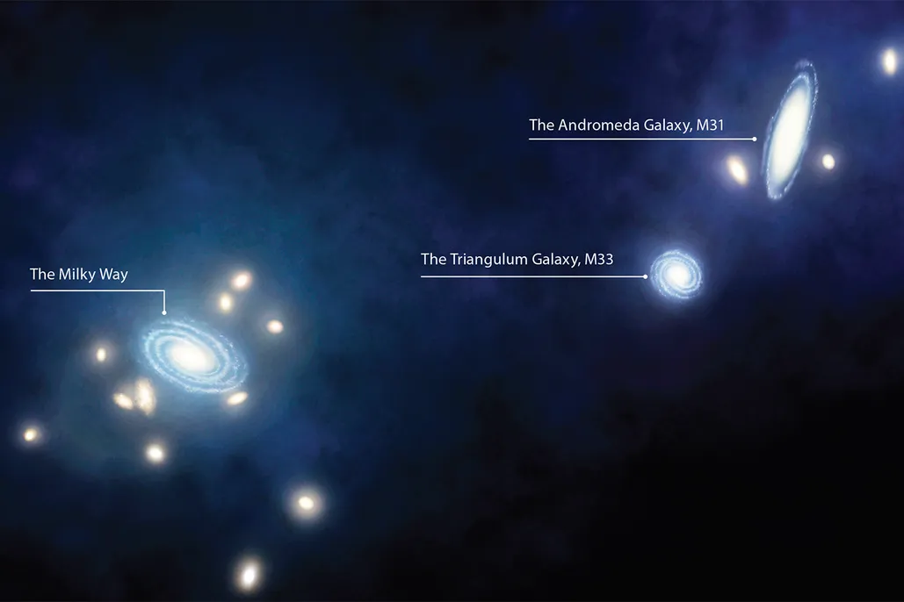
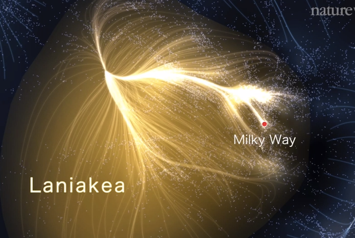
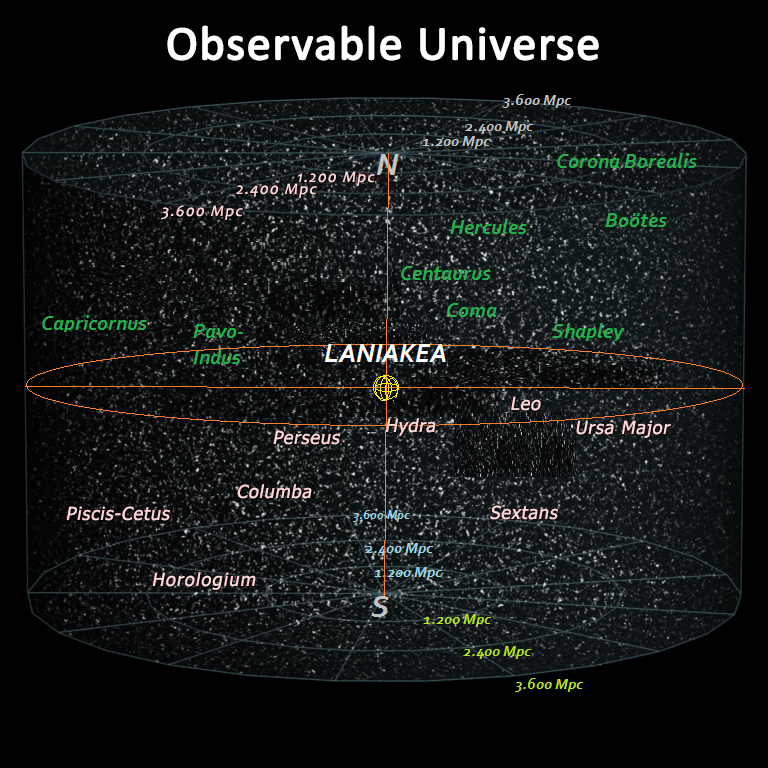
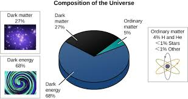
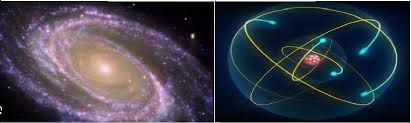

The universe is vast, almost too big to imagine. It’s a
place of infinite wonders and mysteries. Let’s take a
journey to understand its scale.
We start at Earth—our home. It’s huge to us, with a diameter
of over 12,700 kilometers. But in the solar system, Earth is
tiny. Did you know that over a million Earths could fit
inside the Sun?
Our solar system is massive, stretching billions of
kilometers across. If Earth were the size of a marble, the
Sun would be a big ball 14 meters away, and Neptune would
orbit as far as a football field. And here’s a fun fact: It
takes sunlight about eight minutes to reach us from the Sun,
even though it travels at the speed of light.

But the solar system is just one small part of the Milky
Way—a collection of hundreds of billions of stars. Our
galaxy is 100,000 light-years wide. To put that in
perspective, if you could travel at the speed of light, it
would still take you 100,000 years to cross it. That’s
longer than humans have existed.

Our galaxy belongs to a small neighborhood of galaxies
called the Local Group, which contains about 50 galaxies.
The nearest big galaxy, Andromeda, is 2.5 million
light-years away. And get this—Andromeda is on a collision
course with the Milky Way. In about 4.5 billion years,
they’ll merge to form a new galaxy. Astronomers have even
nicknamed it ‘Milkomeda.’

Galaxies form clusters, and these clusters group into
superclusters. The Laniakea Supercluster, our cosmic home,
is so vast it would take light 500 million years to travel
across it. Within Laniakea, there are over 100,000 galaxies,
each filled with billions of stars.

And beyond that? The observable universe. It’s 93 billion
light-years wide, containing an estimated two trillion
galaxies. That’s so many that if you tried to count them at
one per second, it would take you over 60,000 years. Each
galaxy has millions, billions, or even trillions of
stars—and who knows how many planets?

Here’s a mind-blowing thought: everything we can see, all
the galaxies, stars, and planets, make up just 5% of the
universe. The rest is dark matter and dark energy—mysterious
forces we don’t fully understand yet.

From the smallest particles to the largest galaxies, the
universe is a place of wonders. Did you know that the atoms
in your body were forged in stars? In a way, we are made of
stardust, connected to the cosmos itself. Isn’t that
amazing?

The universe is vast. And as long as we keep wondering,
exploring, and asking questions, there will always be more
to discover.